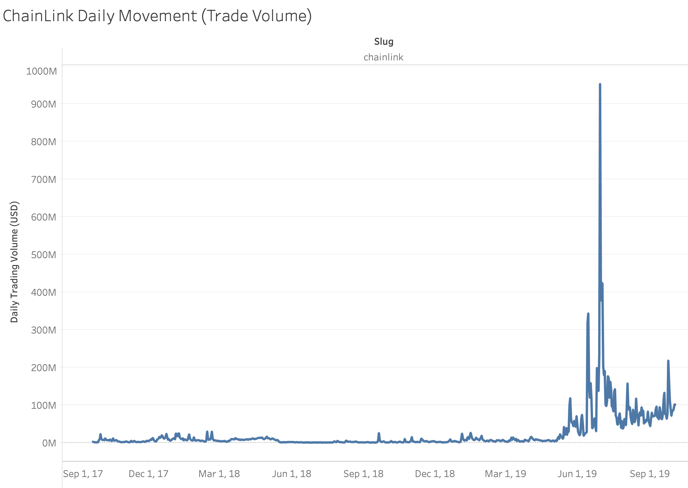

Comparing the PRICE of a specific token allows us to get a measure of how many people are actually buying into a specific project. This first graph displays the price of the token over time.
NOTE: We may later add metrics in order to compare specific projects with the DMA (Daily Moving Average) of the whole crypto market, or possibly the "TOTAL2" indicator from tradingview.com, which displays the total market capitalization of all coins excluding BTC.
Comparing the TRADING VOLUME of a specific token allows us to get a measure of the movement of a token. Later comparing this to the trend analysis can show us how trend rankings correlate to the movement of tokens.
